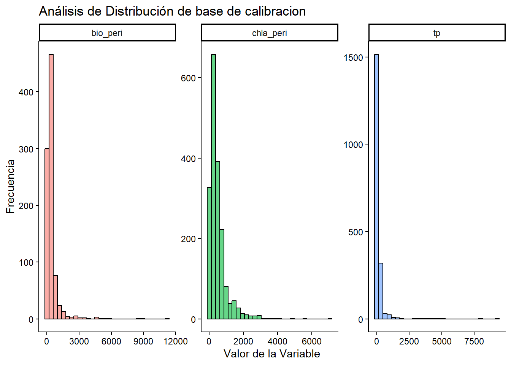
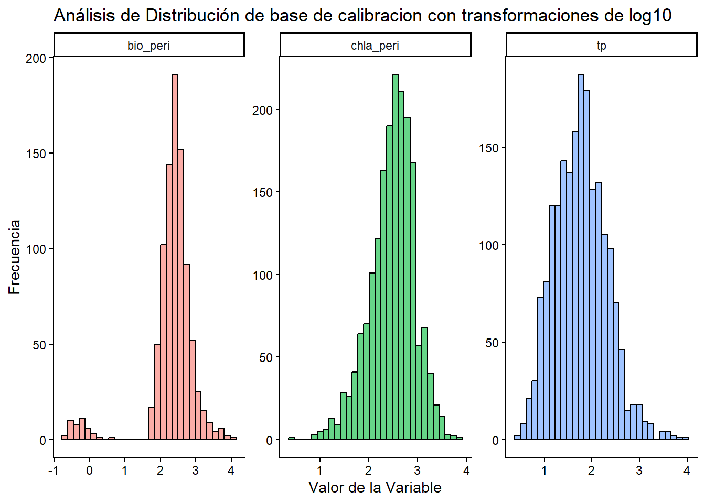
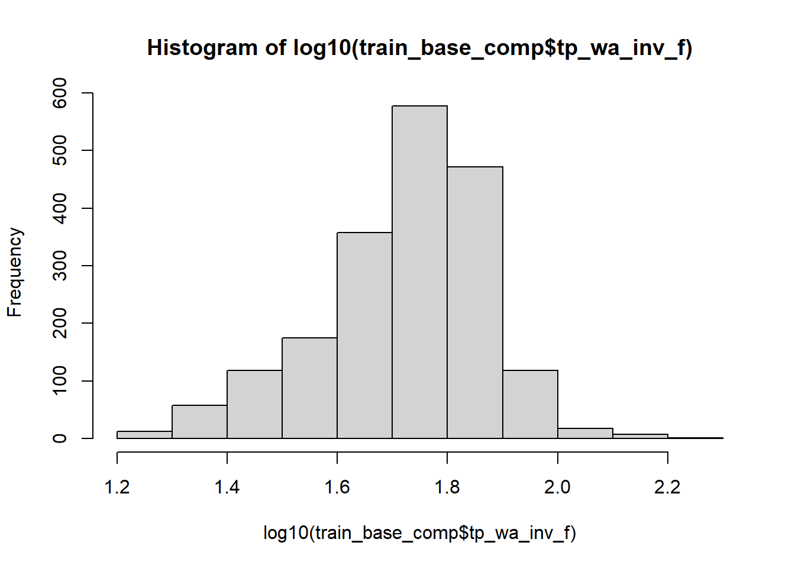
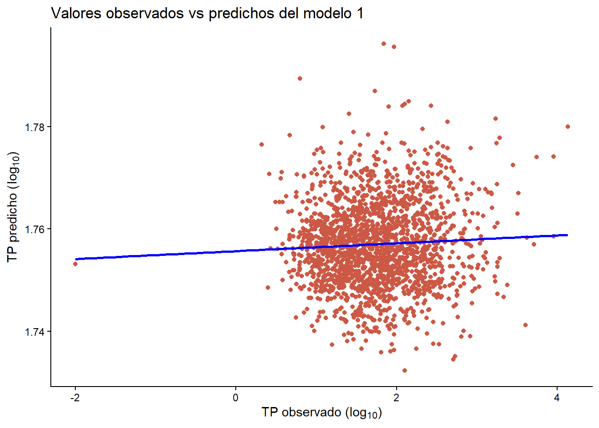
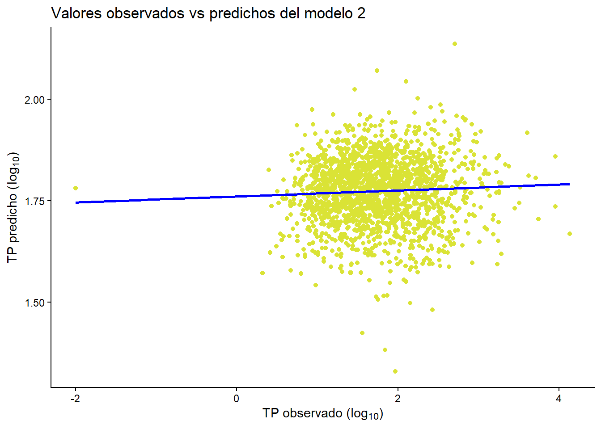
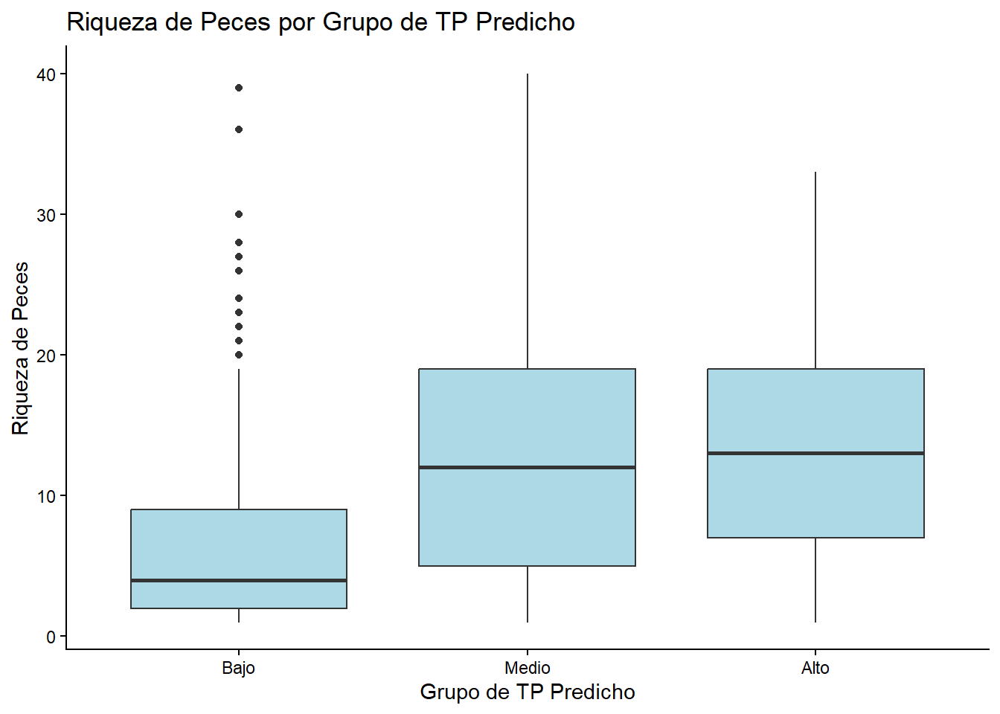
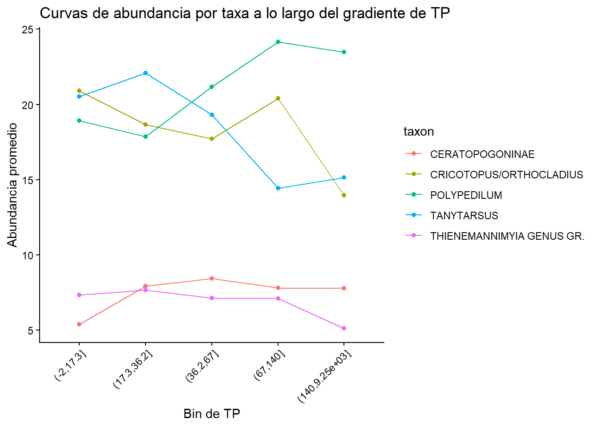
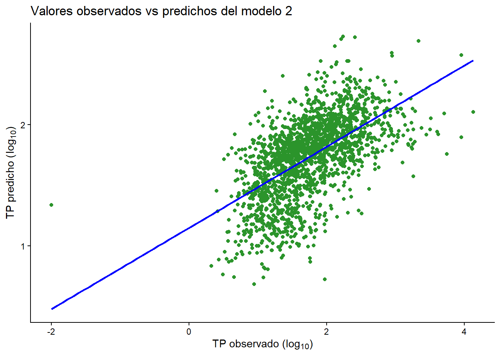
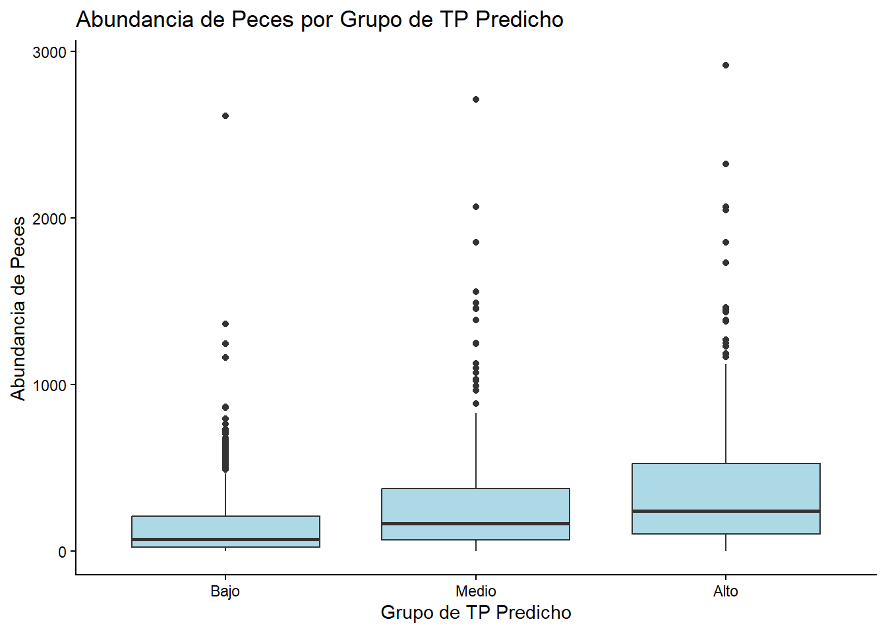
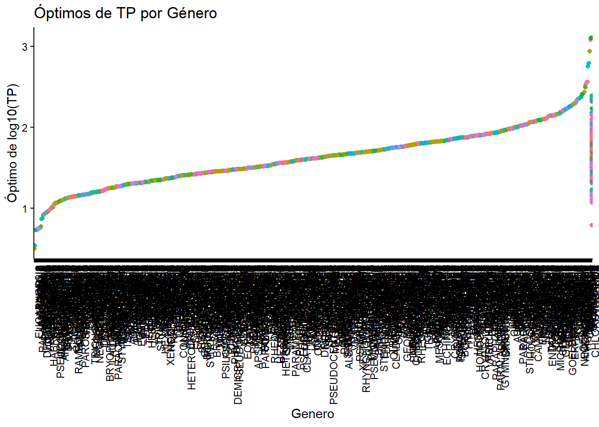

library("readr")
library("dplyr")
library("tidyr")
library("ggplot2")
library("car")
library("FSA")Tarea: Índice de nutrientes en ríos (NRSA 2018-19 -> 2023-24)
Objetivo
En esta tarea vas a construir un flujo de modelado por niveles para predecir fosforo total (TP) en rios.
- Entrenamiento: NRSA 2018-2019
- Validacion externa: NRSA 2023-2024
- Regla simplificada: usar solo
VISIT_NO == 1ySAM_CODE == "REGULAR"
La construccion es acumulativa:
- Modelo 1: Chl-a -> TP
- Modelo 2: Chl-a + biomasa de perifiton -> TP
- Modelo 3: Chl-a + biomasa + TP inferido por promedio ponderado de invertebrados -> TP
Al final, usarás peces para interpretación ecológica (no como predictor del modelo).
Recuerda que los surveys no tienen translape entre años, entonces, no podemos predecir los mismos sitios con cuales entrenamos los modelos. Solo se puede entrenar en 2018-19 y validar en 2023-24. Que no hay translape entre encuestas es una ventaja para evaluar la robustez de los modelos.
1. Cargar paquetes
1.1 Funciones utiles para evaluar modelos
No necesitas calcular metricas a mano. Define estas funciones una sola vez y usalas en los niveles 1, 2 y 3.
# Metricas de validacion externa (observado vs predicho)
calc_rmse <- function(obs, pred) {
sqrt(mean((obs - pred)^2, na.rm = TRUE))
}
calc_mae <- function(obs, pred) {
mean(abs(obs - pred), na.rm = TRUE)
}
calc_bias <- function(obs, pred) {
mean(pred - obs, na.rm = TRUE)
}
calc_r2 <- function(obs, pred) {
stats::cor(obs, pred, use = "complete.obs")^2
}
# Esta funcion regresa una fila con todas las metricas
# `data` es un data.frame con columnas de observado y predicho
# `obs_col` y `pred_col` son nombres de columna (string)
# `model_name` es un string para identificar el modelo
model_metrics <- function(data, obs_col, pred_col, model_name) {
dplyr::tibble(
modelo = model_name,
n_test = sum(stats::complete.cases(data[, c(obs_col, pred_col)])),
r2 = calc_r2(data[[obs_col]], data[[pred_col]]),
rmse = calc_rmse(data[[obs_col]], data[[pred_col]]),
mae = calc_mae(data[[obs_col]], data[[pred_col]]),
sesgo = calc_bias(data[[obs_col]], data[[pred_col]])
)
}Proporciona una definicion corta de cada metrica en tu entrega en palabras propias. Trata de interpretar el codigo de las funciones para entender que hace cada metrica. Por ejemplo:
- R2: La correlacion entre observado y predicho, indica que tan bien el modelo explica la variabilidad de los datos.
- RMSE: Las siglas representan Root Mean Square Error, se usa para medir la diferencia promedio entre los valores reales (observados) y los predichos por el modelo. Entre menor sea el valor, más preciso es el modelo.
- MAE: Representa el error absoluto medio (Mean Absolute Error), mide la magnitud promedio de los errores entre los valores reales (observados) y los predichos por el modelo. Como es absoluto no importa si la magnitud es positiva o negativa, se usa para evaluar la precisión del modelo.
- Sesgo: Es el error sistemático que ocurre cuando el modelo tiende a sobreestimar o subestimar los valores reales. Es como el MAE pero indica hacia dónde se está inclinando el modelo.
Tambien puedes extraer informacion del ajuste del modelo (en entrenamiento) con funciones de R base:
# Ejemplo general para un modelo lineal llamado m1
# summary(m1)$r.squared -> R2 en train
# summary(m1)$adj.r.squared -> R2 ajustado en train
# sigma(m1) -> error residual del modelo
# AIC(m1) -> AIC (comparacion entre modelos)
# BIC(m1) -> BIC (comparacion entre modelos)1.2 Log-transformaciones y manejo de ceros
Antes de usar log10, revisa si hay ceros.
- Si una variable tiene solo valores positivos, usa log10 directo.
- Si incluye ceros, usa una de estas estrategias y reportala en tu entrega:
- Filtrar ceros para ese analisis.
- Usar un desplazamiento pequeno: log10(x + c), con c basado en el minimo positivo.
2. Cargar archivos principales
# 2018-2019 (entrenamiento)
chem_1819 <- readr::read_csv("../data/raw/streams-rivers-2018-2019/nrsa_1819_water_chemistry_chla_-_data.csv")
pchl_1819 <- readr::read_csv("../data/raw/streams-rivers-2018-2019/NRSA_1819_PeriChla.csv")
pbio_1819 <- readr::read_csv("../data/raw/streams-rivers-2018-2019/NRSA_1819_pbio_0.csv")
inv_1819 <- readr::read_csv("../data/raw/streams-rivers-2018-2019/nrsa_1819_benthic_macroinvertebrate_count_-_data.csv")
fish_1819 <- readr::read_csv("../data/raw/streams-rivers-2018-2019/nrsa-1819-fish-count-data.csv")
# 2023-2024 (validacion externa)
chem_2324 <- readr::read_csv("../data/raw/streams-rivers-2023-2024/nrsa2324_waterchemistry.csv")
pchl_2324 <- readr::read_csv("../data/raw/streams-rivers-2023-2024/nrsa2324_periphytonchlorophyll-a.csv")
pbio_2324 <- readr::read_csv("../data/raw/streams-rivers-2023-2024/nrsa2324_periphytonbiomass.csv")
inv_2324 <- readr::read_csv("../data/raw/streams-rivers-2023-2024/nrsa2324_benthiccount.csv")
fish_2324 <- readr::read_csv("../data/raw/streams-rivers-2023-2024/nrsa2324_fishcount.csv")Chequeo rapido:
dplyr::tibble(
tabla = c("chem_1819", "pchl_1819", "pbio_1819", "inv_1819", "fish_1819",
"chem_2324", "pchl_2324", "pbio_2324", "inv_2324", "fish_2324"),
filas = c(nrow(chem_1819), nrow(pchl_1819), nrow(pbio_1819), nrow(inv_1819), nrow(fish_1819),
nrow(chem_2324), nrow(pchl_2324), nrow(pbio_2324), nrow(inv_2324), nrow(fish_2324))
)# A tibble: 10 × 2
tabla filas
<chr> <int>
1 chem_1819 2112
2 pchl_1819 2112
3 pbio_1819 1038
4 inv_1819 87079
5 fish_1819 22057
6 chem_2324 2172
7 pchl_2324 2130
8 pbio_2324 2130
9 inv_2324 87940
10 fish_2324 199252.1 Punteros de join (importante)
Antes de unir tablas, usa estas reglas:
- No unir 2018-2019 con 2023-2024 fila a fila. Se usan como train y test separados.
- 2018 PeriChla: no confies en
UIDpara unir con quimica. Para esa combinacion, usaSITE_ID + VISIT_NO + DATE_COL. - 2023-2024 PeriChla y PeriBiomasa:
UIDfunciona bien; si hay ambiguedad, usa respaldoSITE_ID + VISIT_NO + DATE_COL. - Antes de cada
left_join, confirma que la tabla de la derecha tiene una sola fila por llave (si no, se duplican filas del modelo).
# Helper para revisar si una llave es unica en una tabla
check_key_uniqueness <- function(data, keys) {
data |>
dplyr::count(dplyr::across(dplyr::all_of(keys)), name = "n") |>
dplyr::filter(n > 1) |>
nrow()
}
# Ejemplo:
check_key_uniqueness(pchl_1819, c("SITE_ID", "VISIT_NO", "DATE_COL"))[1] 0check_key_uniqueness(pchl_1819, c("UID"))[1] 0check_key_uniqueness(pchl_2324, c("SITE_ID", "VISIT_NO", "DATE_COL"))[1] 0check_key_uniqueness(pchl_2324, c("UID"))[1] 03. Preparar tablas base (solo visita 1 y muestras regulares)
3.1 TP desde quimica
Usa PTL_RESULT como TP en ambas encuestas.
tp_1819 <- chem_1819 |>
dplyr::filter(VISIT_NO == 1, SAM_CODE == "REGULAR") |>
dplyr::transmute(uid = UID, site = SITE_ID, visit = VISIT_NO, tp = PTL_RESULT)
tp_2324 <- chem_2324 |>
dplyr::filter(VISIT_NO == 1, SAM_CODE == "REGULAR") |>
dplyr::transmute(uid = UID, site = SITE_ID, visit = VISIT_NO, tp = PTL_RESULT)3.2 Chl-a de perifiton
# Tu codigo aqui
# Objetivo: crear pchl_train y pchl_test con columnas: uid, site, visit, chla_peri
#
# Puntero clave de join:
# - En 2018, para enlazar peri-Chla con quimica usa SITE_ID + VISIT_NO + DATE_COL.
# - En 2023-24, UID suele funcionar bien.
pchl_train<-pchl_1819 |>
filter(VISIT_NO == 1, SAM_CODE == "REGULAR") |>
transmute(site = SITE_ID, visit = VISIT_NO, chla_peri = RESULT_VOL)
pchl_test<-pchl_2324 |>
filter(VISIT_NO == 1, SAM_CODE == "REGULAR") |>
transmute(site = SITE_ID, visit = VISIT_NO, chla_peri = RESULT_VOL)3.3 Biomasa de perifiton
Filtra ANALYTE == "AFDM" para biomasa seca libre de cenizas.
# Tu codigo aqui
# Objetivo: crear pbio_train y pbio_test con columnas: uid, site, visit, bio_peri
pbio_train <- pbio_1819 |>
filter(VISIT_NO == 1, SAM_CODE == "REGULAR", ANALYTE == "AFDM") |>
transmute(site = SITE_ID, visit = VISIT_NO, bio_peri = RESULT_VOL)
pbio_test <- pbio_2324 |>
filter(VISIT_NO == 1, SAM_CODE == "REGULAR", ANALYTE == "AFDM") |>
transmute(site = SITE_ID, visit = VISIT_NO, bio_peri = RESULT_VOL)
#Elijo esta medida porque tiene mayor cantidad de mediciones3.4 Construir tablas de modelado train/test
# Antes de unir: verifica una fila por llave en pchl_* y pbio_* para evitar
# multiplicar filas de train_base/test_base.
pbio_train |> count(site, visit) |> filter(n > 1)# A tibble: 0 × 3
# ℹ 3 variables: site <chr>, visit <dbl>, n <int>pchl_train |> count(site, visit) |> filter(n > 1)# A tibble: 2 × 3
site visit n
<chr> <dbl> <int>
1 NRS18_MN_RF001 1 2
2 NRS18_MN_RF002 1 2# Hay un par de duplicados
pchl_train <- pchl_train |>
group_by(site, visit) |>
summarise(chla_peri = mean(chla_peri, na.rm = TRUE),
.groups = "drop")
pchl_train |> count(site, visit) |> filter(n > 1)# A tibble: 0 × 3
# ℹ 3 variables: site <chr>, visit <dbl>, n <int>pbio_test |> count(site, visit) |> filter(n > 1)# A tibble: 38 × 3
site visit n
<chr> <dbl> <int>
1 NRS23_CA_HP001 1 2
2 NRS23_CA_HP005 1 2
3 NRS23_CA_HP006 1 2
4 NRS23_FL_HP001 1 2
5 NRS23_IA_HP001 1 2
6 NRS23_KS_HP001 1 2
7 NRS23_KY_HP001 1 2
8 NRS23_KY_HP002 1 2
9 NRS23_ME_HP001 1 2
10 NRS23_ME_HP003 1 2
# ℹ 28 more rowspchl_test|> count(site, visit) |> filter(n > 1)# A tibble: 38 × 3
site visit n
<chr> <dbl> <int>
1 NRS23_CA_HP001 1 2
2 NRS23_CA_HP005 1 2
3 NRS23_CA_HP006 1 2
4 NRS23_FL_HP001 1 2
5 NRS23_IA_HP001 1 2
6 NRS23_KS_HP001 1 2
7 NRS23_KY_HP001 1 2
8 NRS23_KY_HP002 1 2
9 NRS23_ME_HP001 1 2
10 NRS23_ME_HP003 1 2
# ℹ 28 more rows# Hay duplicados
pchl_test<- pchl_test |>
group_by(site, visit) |>
summarise(chla_peri = mean(chla_peri, na.rm = TRUE),
.groups = "drop")
pbio_test <- pbio_test |>
group_by(site, visit) |>
summarise(bio_peri = mean(bio_peri, na.rm = TRUE),
.groups = "drop")
pbio_test |> count(site, visit) |> filter(n > 1)# A tibble: 0 × 3
# ℹ 3 variables: site <chr>, visit <dbl>, n <int>pchl_test|> count(site, visit) |> filter(n > 1)# A tibble: 0 × 3
# ℹ 3 variables: site <chr>, visit <dbl>, n <int>train_base <- tp_1819 |>
dplyr::left_join(pchl_train, by = c("site", "visit")) |>
dplyr::left_join(pbio_train, by = c("site", "visit")) |>
select(uid,site, visit, tp, chla_peri, bio_peri)
train_base <- train_base |>
group_by(site, visit) |>
summarise(
tp = mean(tp, na.rm = TRUE),
chla_peri = mean(chla_peri, na.rm = TRUE),
bio_peri = mean(bio_peri, na.rm = TRUE),
.groups = "drop"
)
test_base <- tp_2324 |>
dplyr::left_join(pchl_test, by = c("site", "visit")) |>
dplyr::left_join(pbio_test, by = c("site", "visit")) |>
select(uid,site, visit, tp, chla_peri, bio_peri)
test_base <- test_base |>
group_by(site, visit) |>
summarise(
tp = mean(tp, na.rm = TRUE),
chla_peri = mean(chla_peri, na.rm = TRUE),
bio_peri = mean(bio_peri, na.rm = TRUE),
.groups = "drop"
)
#Elimino los uid porque estaban duplicados en algunos casos, entonces promedio los valores de los sitios duplicados4. EDA minima antes de modelar
# Tu codigo aqui
# Sugerencias:
# 1) resumen de NA por variable en train_base y test_base
# 2) histogramas de tp, chla_peri, bio_peri
# 3) decidir transformacion log10 para TP y predictores
na_train <- train_base |>
summarise(across(everything(), ~ sum(is.na(.)))) |>
tidyr::pivot_longer(everything(), names_to = "variable", values_to = "na_count")
# Hay bastantes NA en bio_peri
na_test <- test_base |>
summarise(across(everything(), ~ sum(is.na(.)))) |>
tidyr::pivot_longer(everything(), names_to = "variable", values_to = "na_count")
# Hay mucho menos NA que en la base de entrenamiento
train_base |>
select(tp, chla_peri, bio_peri) |>
pivot_longer(everything(), names_to = "variable", values_to = "valor") |>
ggplot(aes(x = valor, fill = variable)) +
geom_histogram(color = "black", alpha = 0.6, bins = 30, show.legend = FALSE) +
facet_wrap(~variable, scales = "free") +
theme_classic() +
labs(title = "Análisis de Distribución de base de calibracion", x = "Valor de la Variable", y = "Frecuencia")
# Las tres variables tienen distribuciones sesgadas a la derecha, entonces aplicar log10 a todos puede ayudar. Sin embargo, para tp hay un valor negativo, que posiblemente se deba a un error introduciendo datos, pero como no se tiene certeza, es mejor aplicar filtros para descartar esa fila.
train_base |>
select(tp, chla_peri, bio_peri) |>
pivot_longer(everything(), names_to = "variable", values_to = "valor") |>
ggplot(aes(x = log10(valor), fill = variable)) +
geom_histogram(color = "black", alpha = 0.6, bins = 30, show.legend = FALSE) +
facet_wrap(~variable, scales = "free") +
theme_classic() +
labs(title = "Análisis de Distribución de base de calibracion con transformaciones de log10", x = "Valor de la Variable", y = "Frecuencia")
5. Nivel 1: modelo Chl-a -> TP
# Tu codigo aqui
# 1) crear train_m1 y test_m1 con casos completos
# 2) ajustar: log10(tp) ~ log10(chla_peri)
# 3) predecir en test_m1
# 4) guardar metricas con model_metrics(...)
#
# Sugerencia de nombres:
# m1 <- lm(log10(tp) ~ log10(chla_peri), data = train_m1)
# test_m1$pred_logtp_m1 <- predict(m1, newdata = test_m1)
# metricas_m1 <- model_metrics(test_m1, obs_col = "logtp", pred_col = "pred_logtp_m1", model_name = "Nivel 1")
#
# Si creas logtp antes, usa: train_m1 <- mutate(train_m1, logtp = log10(tp))
# y: test_m1 <- mutate(test_m1, logtp = log10(tp))
train_m1<- train_base |>
filter(tp>0, chla_peri>0) |>
mutate(logtp = log10(tp), logchla = log10(chla_peri))
test_m1<- test_base |>
filter(tp>0, chla_peri>0) |>
mutate(logtp = log10(tp), logchla = log10(chla_peri))
m1<- lm(logtp ~ logchla, data = train_m1)
test_m1$pred_logtp_m1 <- predict(m1, newdata = test_m1)
metricas <- model_metrics(test_m1, obs_col = "logtp", pred_col = "pred_logtp_m1", model_name = "Nivel 1")
# Este no es un buen modelo, tiene un R2 muy bajo.6. Nivel 2: modelo Chl-a + biomasa -> TP
# Tu codigo aqui
# 1) crear train_m2 y test_m2 con casos completos
# 2) ajustar: log10(tp) ~ log10(chla_peri) + log10(bio_peri)
# 3) predecir en test_m2
# 4) guardar metricas con model_metrics(...)
train_m2<- train_base |>
filter(tp>0, chla_peri>0,bio_peri>0) |>
mutate(logtp = log10(tp), logchla = log10(chla_peri),logbio = log10(bio_peri))
test_m2<- test_base |>
filter(tp>0,chla_peri>0,bio_peri>0) |>
mutate(logtp = log10(tp), logchla = log10(chla_peri),logbio = log10(bio_peri))
m2<- lm(logtp ~ logchla + logbio, data = train_m2)
test_m2$pred_logtp_m2 <- predict(m2, newdata = test_m2)
metricas_m2 <- model_metrics(test_m2, obs_col = "logtp", pred_col = "pred_logtp_m2", model_name = "Nivel 2")
metricas <- bind_rows(metricas, metricas_m2)
# Las mediciones se mantienen similares e incluso un poco peoresDiagnostico de colinealidad:
cor.test(log10(train_base$chla_peri),
log10(train_base$bio_peri),
method = "pearson")
Pearson's product-moment correlation
data: log10(train_base$chla_peri) and log10(train_base$bio_peri)
t = 5.6877, df = 901, p-value = 1.74e-08
alternative hypothesis: true correlation is not equal to 0
95 percent confidence interval:
0.1224180 0.2483929
sample estimates:
cor
0.1861705 vif(m2) logchla logbio
1.035941 1.035941 # Preguntas:
# - chla_peri y bio_peri estan correlacionadas?
# La prueba de correlación de Pearson muestra que hay una correlación significativa entre los logaritmos de las variables (r2=0.18, p<0.001)
# - ambas aportan de manera independiente?
# El vif fue de 1.035 lo que indica una colinearidad practicamente nula, lo que significa que ambas aportan de forma independiente.7. WA con invertebrados (entrenado en 2018-19)
7.1 Preparar abundancias de invertebrados
Sugerencias:
- usar solo
VISIT_NO == 1 - usar
IS_DISTINCT == 1 - usar
TOTALcomo abundancia - agrupar por taxon objetivo (
TARGET_TAXON)
inv_train_long<-inv_1819|>
filter(VISIT_NO == 1, IS_DISTINCT == 1) |>
group_by(SITE_ID, VISIT_NO, TARGET_TAXON) |>
summarise(abundance = sum(TOTAL, na.rm = TRUE), .groups = "drop") |>
transmute(site = SITE_ID, visit = VISIT_NO, taxon = TARGET_TAXON, abundance)
inv_test_long<-inv_2324|>
filter(VISIT_NO == 1, IS_DISTINCT == 1) |>
group_by(SITE_ID, VISIT_NO, TARGET_TAXON) |>
summarise(abundance = sum(TOTAL, na.rm = TRUE), .groups = "drop") |>
transmute(site = SITE_ID, visit = VISIT_NO, taxon = TARGET_TAXON, abundance)
# Objetivo:
# inv_train_long: uid, site, visit, taxon, abundance
# inv_test_long: uid, site, visit, taxon, abundance7.2 Calcular optimos de TP por taxon (train)
inv_optima <- inv_train_long |>
left_join(train_base|>
filter(tp>0)|>
mutate(log_tp = log10(tp)),
by = c("site", "visit")
) |>
filter(!is.na(log_tp), !is.na(abundance)) |>
group_by(taxon) |>
summarise(
optimum_logtp = sum(log_tp*abundance)/sum(abundance),
.groups = "drop"
)
# Formula:
# optimum = sum(log10(tp) * abundance) / sum(abundance)
# Salida esperada: inv_optima (taxon, optimum_logtp)7.3 Inferir TP por WA en sitios train/test
wa_inv_train <- inv_train_long |>
left_join(inv_optima, by = "taxon") |>
group_by(site, visit) |>
summarise(logtp_wa = sum(optimum_logtp * abundance) / sum(abundance),
tp_wa_inv = 10^logtp_wa,
.groups = "drop"
)
wa_inv_test <- inv_test_long |>
left_join(inv_optima, by = "taxon") |>
group_by(site, visit) |>
summarise(logtp_wa = sum(optimum_logtp * abundance) / sum(abundance),
tp_wa_inv = 10^logtp_wa,
.groups = "drop"
)
# Tu codigo aqui
# Salidas esperadas:
# wa_inv_train: uid, site, visit, tp_wa_inv
# wa_inv_test: uid, site, visit, tp_wa_inv7.4 Sensibilidad a taxa raros: repetir WA antes/despues de filtrar
Ahora repite el indice WA removiendo taxa raros y compara contra la version original.
# Tu codigo aqui
# Paso A: definir taxa validos en train
taxa_validos <- inv_train_long |>
dplyr::group_by(taxon) |>
dplyr::summarise(
n_sites = dplyr::n_distinct(site),
total_abundance = sum(abundance, na.rm = TRUE),
.groups = "drop"
) |>
dplyr::filter(n_sites >= 5, total_abundance >= 20)
# Paso B: crear versiones filtradas
inv_train_long_f <- inv_train_long |> dplyr::semi_join(taxa_validos, by = "taxon")
inv_test_long_f <- inv_test_long |> dplyr::semi_join(taxa_validos, by = "taxon")
# Paso C: recalcular optimos y WA por sitio con la version filtrada
inv_optima_f <- inv_train_long_f |>
left_join(train_base |>
filter(tp>0) |>
mutate(log_tp = log10(tp)),
by = c("site", "visit")
) |>
filter(!is.na(log_tp), !is.na(abundance)) |>
group_by(taxon) |>
summarise(
optimum_logtp = sum(log_tp*abundance)/sum(abundance),
.groups = "drop"
)
wa_inv_train_f<- inv_train_long_f |>
left_join(inv_optima_f, by = "taxon") |>
group_by(site, visit) |>
summarise(logtp_wa_f = sum(optimum_logtp * abundance) / sum(abundance),
tp_wa_inv_f = 10^logtp_wa_f,
.groups = "drop"
)
wa_inv_test_f <- inv_test_long_f |>
left_join(inv_optima_f, by = "taxon") |>
group_by(site, visit) |>
summarise(logtp_wa_f = sum(optimum_logtp * abundance) / sum(abundance),
tp_wa_inv_f = 10^logtp_wa_f,
.groups = "drop"
)
nrow(wa_inv_test)[1] 1909nrow(wa_inv_test_f)[1] 1909# Salidas esperadas:
# wa_inv_train_f: uid, site, visit, tp_wa_inv_f
# wa_inv_test_f: uid, site, visit, tp_wa_inv_f7.5 Comparar WA completo vs WA filtrado y elegir uno
Si el WA pre-filtrado da mejor ajuste en test, usa ese predictor en el modelo final.
# Tu codigo aqui
# 1) construir una tabla de comparacion en test para WA-only
# (mismo y en ambos casos)
wa_test_compare<-test_base |>
left_join(wa_inv_test, by = c("site", "visit")) |>
left_join(wa_inv_test_f, by = c("site", "visit"))|>
select(site, visit, tp, tp_wa_inv, tp_wa_inv_f)
# Ejemplo de evaluacion con metricas en test:
# wa_test_compare <- test_base |>
# dplyr::left_join(wa_inv_test, by = c("uid", "site", "visit")) |>
# dplyr::left_join(wa_inv_test_f, by = c("uid", "site", "visit")) |>
# dplyr::mutate(logtp = log(tp + 0.01)))
#
metricas_wa_all <- model_metrics(wa_test_compare, "tp", "tp_wa_inv", "WA completo")
metricas_wa_filt <- model_metrics(wa_test_compare, "tp", "tp_wa_inv_f", "WA filtrado")
bind_rows(metricas_wa_all, metricas_wa_filt)# A tibble: 2 × 6
modelo n_test r2 rmse mae sesgo
<chr> <int> <dbl> <dbl> <dbl> <dbl>
1 WA completo 976 0.0474 713. 159. -137.
2 WA filtrado 1907 0.0514 543. 127. -105.# 2) definir el predictor seleccionado para nivel 3:
# tp_wa_inv_sel = tp_wa_inv_f si WA filtrado mejora (por ejemplo menor RMSE),
# de lo contrario tp_wa_inv.
# El WA filtrado tiene menor RMSE, mayor R2, menor mae y menor sesgo, por lo cual lo elijo para el modelo 38. Nivel 3: modelo combinado (Chl-a + biomasa + WA invertebrados)
# Tu codigo aqui
train_base_comp <- train_base |>
left_join(wa_inv_train_f, by = c("site", "visit")) |>
select(site, visit, tp, chla_peri, bio_peri, tp_wa_inv_f)
test_base_comp <- test_base |>
left_join(wa_inv_test_f, by = c("site", "visit")) |>
select(site, visit, tp,chla_peri,bio_peri,tp_wa_inv_f)
hist(log10(train_base_comp$tp_wa_inv_f))
train_m3<- train_base_comp |>
filter(tp>=0, chla_peri>=0,bio_peri>=0) |>
mutate(logtp = log10(tp), logchla = log10(chla_peri+1),logbio = log10(bio_peri+1),logtp_wa_inv_f = log10(tp_wa_inv_f))
test_m3<- test_base_comp |>
filter(tp>=0,chla_peri>=0,bio_peri>=0) |>
mutate(logtp = log10(tp), logchla = log10(chla_peri+1),logbio = log10(bio_peri+1),logtp_wa_inv_f = log10(tp_wa_inv_f))
m3<- lm(logtp ~ logchla + logbio+logtp_wa_inv_f, data = train_m3)
test_m3$pred_logtp_m3 <- predict(m3, newdata = test_m3)
metricas_m3 <- model_metrics(test_m3, obs_col = "logtp", pred_col = "pred_logtp_m3", model_name = "Nivel 3")
metricas <- bind_rows(metricas, metricas_m3)
# 1) unir wa_inv_train/wa_inv_test y la version filtrada a train_base/test_base
# 2) crear tp_wa_inv_sel segun el resultado de 7.5
# 2) crear train_m3 y test_m3 con casos completos
# 3) ajustar: log10(tp) ~ log10(chla_peri) + log10(bio_peri) + tp_wa_inv_sel
# 4) predecir en test_m3
# 5) guardar metricas con model_metrics(...)9. Comparar desempeno de niveles 1, 2 y 3
metricas<-metricas|>
mutate(AIC = c(AIC(m1), AIC(m2), AIC(m3)))
metricas# A tibble: 3 × 7
modelo n_test r2 rmse mae sesgo AIC
<chr> <int> <dbl> <dbl> <dbl> <dbl> <dbl>
1 Nivel 1 1906 0.00283 0.573 0.458 0.00770 3015.
2 Nivel 2 1874 0.00267 0.575 0.461 0.0237 1422.
3 Nivel 3 1876 0.342 0.464 0.361 -0.0138 1030.# Tu codigo aqui
# Construye una tabla final con:
# modelo, n_test, r2, rmse, mae, sesgo, AICgraf_m1<-ggplot(test_m1,aes(x = logtp, y = pred_logtp_m1)) +
geom_point(color="#CC5945") +
geom_smooth(method = "lm", se = FALSE, color = "blue") +
labs(
title = "Valores observados vs predichos del modelo 1",
x = expression("TP observado ("*log[10]*")"),
y = expression("TP predicho ("*log[10]*")")
) +
theme_classic()
graf_m2<-ggplot(test_m2,aes(x = logtp, y = pred_logtp_m2)) +
geom_point(color="#DAE336") +
geom_smooth(method = "lm", se = FALSE, color = "blue") +
labs(
title = "Valores observados vs predichos del modelo 2",
x = expression("TP observado ("*log[10]*")"),
y = expression("TP predicho ("*log[10]*")")
) +
theme_classic()
graf_m3<-ggplot(test_m3,aes(x = logtp, y = pred_logtp_m3)) +
geom_point(color="#2B942B") +
geom_smooth(method = "lm", se = FALSE, color = "blue") +
labs(
title = "Valores observados vs predichos del modelo 2",
x = expression("TP observado ("*log[10]*")"),
y = expression("TP predicho ("*log[10]*")")
) +
theme_classic()
graf_m1
graf_m2
graf_m3
# Tu codigo aqui
# Grafico: observado vs predicho por modelo10. Capa de interpretacion con peces (no predictor)
Despues de elegir el mejor modelo, usa su TP predicho para explorar patrones de peces en 2023-24.
10.1 Construir metricas de peces por sitio
# Tu codigo aqui
fish_train_long <- fish_1819 |>
filter(VISIT_NO == 1, !is.na(TOTAL)) |>
group_by(SITE_ID, VISIT_NO) |>
summarise(richness= n_distinct(FINAL_NAME,na.rm = TRUE), abundance = sum(TOTAL, na.rm = TRUE), .groups = "drop")
fish_test_long <- fish_2324 |>
filter(VISIT_NO == 1, !is.na(TOTAL)) |>
group_by(SITE_ID, VISIT_NO) |>
summarise(richness= n_distinct(FINAL_NAME,na.rm = TRUE), abundance = sum(TOTAL, na.rm = TRUE), .groups = "drop")
# Sugerencias:
# - filtrar VISIT_NO == 1
# - excluir registros sin TOTAL
# - riqueza = numero de especies (FINAL_NAME o TAXA_ID)
# - abundancia_total = suma(TOTAL)10.2 Relacionar peces con TP predicho
# Tu codigo aqui
# 1) unir metricas de peces con TP predicho del mejor modelo
# 2) crear grupos (terciles) de TP predicho: bajo, medio, alto
# 3) comparar riqueza y abundancia entre grupos
test_fish <- fish_test_long |>
mutate(site = SITE_ID, visit = VISIT_NO)|>
left_join(test_m3, by = c("site", "visit")) |>
select(site, visit, richness, abundance, logtp,pred_logtp_m3)
test_fish <- test_fish |>
mutate(tp_group = ntile(pred_logtp_m3, 3)) |>
mutate(tp_group = factor(tp_group, levels = c(1, 2, 3), labels = c("Bajo", "Medio", "Alto")))
comp_fish <- test_fish |>
group_by(tp_group) |>
filter(!is.na(tp_group)) |>
summarise(mean_richness = mean(richness, na.rm = TRUE),
sd_richness = sd(richness, na.rm = TRUE),
mean_abundance = mean(abundance, na.rm = TRUE),
sd_abundance = sd(abundance, na.rm = TRUE),
.groups = "drop")
comp_fish# A tibble: 3 × 5
tp_group mean_richness sd_richness mean_abundance sd_abundance
<fct> <dbl> <dbl> <dbl> <dbl>
1 Bajo 6.42 6.25 160. 226.
2 Medio 12.8 8.55 263. 298.
3 Alto 13.3 7.74 339. 344.# La riqueza y abundancia según el grupo de TP predicho tienen una desviación estándar muy grande pero si observamos la media, el grupo de TP predicho alto y medio tienen una mayor riqueza y abundancia que el grupo bajo.Para ver si hay diferencias hago una prueba de Kruskal-Wallis para cada una de las dos.
kruskal.test(richness ~ tp_group, data = test_fish)
Kruskal-Wallis rank sum test
data: richness by tp_group
Kruskal-Wallis chi-squared = 269.55, df = 2, p-value < 2.2e-16kruskal.test(abundance ~ tp_group, data = test_fish)
Kruskal-Wallis rank sum test
data: abundance by tp_group
Kruskal-Wallis chi-squared = 148.78, df = 2, p-value < 2.2e-16dunnTest(richness ~ tp_group,
data = test_fish,
method = "holm") Comparison Z P.unadj P.adj
1 Alto - Bajo 14.966592 1.213847e-50 3.641541e-50
2 Alto - Medio 1.646976 9.956296e-02 9.956296e-02
3 Bajo - Medio -13.325885 1.636800e-40 3.273599e-40dunnTest(abundance ~ tp_group,
data = test_fish,
method = "holm") Comparison Z P.unadj P.adj
1 Alto - Bajo 12.036582 2.282170e-33 6.846509e-33
2 Alto - Medio 4.314045 1.602943e-05 1.602943e-05
3 Bajo - Medio -7.726172 1.108289e-14 2.216578e-14# La prueba de Kruskal-Wallis muestra que hay diferencias significativas en la riqueza y abundancia de peces entre los grupos de TP predicho (p < 0.001). Esto sugiere que el nivel de TP predicho puede influir en la diversidad de especies de peces presentes en los sitios estudiados. Al hacer la prueba de Dunn para la riqueza obtengo que el grupo bajo es diferente al alto y al medio, pero la riqueza entre estos últimos dos no varía. En el caso de la abundancia los tres grupos presentan diferencias significativas entre sí.# Tu codigo aqui
# Graficos sugeridos:
# - boxplot de riqueza por grupo TP predicho
test_fish <- test_fish |>
filter(!is.na(tp_group))
richness_fish<-ggplot(test_fish, aes(x = tp_group, y = richness)) +
geom_boxplot(fill = "lightblue") +
labs(title = "Riqueza de Peces por Grupo de TP Predicho",
x = "Grupo de TP Predicho",
y = "Riqueza de Peces") +
theme_classic()
# - boxplot de abundancia por grupo TP predicho
abundance_fish<-ggplot(test_fish, aes(x = tp_group, y = abundance)) +
geom_boxplot(fill = "lightblue") +
labs(title = "Abundancia de Peces por Grupo de TP Predicho",
x = "Grupo de TP Predicho",
y = "Abundancia de Peces") +
theme_classic()
richness_fish
abundance_fish
10.3 Preguntas de interpretacion
¿Aumenta o disminuye la riqueza de peces cuando sube el TP predicho? La riqueza de peces aumenta cuando aumenta el TP predicho, porque los grupos medio y alto tienen una mayor riqueza que el grupo bajo.
¿Hay especies que parecen asociarse a niveles altos de TP predicho?
Para determinar si hay especies que se asocian a niveles altos de TP predicho, se podría realizar un análisis de correlación entre la abundancia de cada especie y los niveles de TP predicho.
# Análisis de correlación entre abundancia de especies y niveles de TP predicho. Sin embargo, test_fish no tiene los datos de FINAL_NAME porque es la base asociada
fish_abundance_tp<-fish_2324 |>
filter(VISIT_NO == 1, !is.na(TOTAL)) |>
left_join(test_fish, by = c("SITE_ID" = "site", "VISIT_NO" = "visit")) |>
select(FINAL_NAME, TOTAL, pred_logtp_m3) |>
group_by(FINAL_NAME) |>
summarise(n=sum(complete.cases (TOTAL, pred_logtp_m3)), cor_tp = ifelse(n>=2, cor(TOTAL, pred_logtp_m3, use = "complete.obs"),NA),
.groups = "drop") |>
arrange(desc(cor_tp))
# Hay varias especies que parecen tener correlación perfecta con el TP predicho, pero esto puede deberse a que solo tienen 2 observaciones. Por eso ahora aumento a las que tengan al menos 5 observaciones.
fish_abundance_tp5<-fish_2324 |>
filter(VISIT_NO == 1, !is.na(TOTAL)) |>
left_join(test_fish, by = c("SITE_ID" = "site", "VISIT_NO" = "visit")) |>
select(FINAL_NAME, TOTAL, pred_logtp_m3) |>
group_by(FINAL_NAME) |>
summarise(n=sum(complete.cases (TOTAL, pred_logtp_m3)), cor_tp = ifelse(n>=5, cor(TOTAL, pred_logtp_m3, use = "complete.obs"),NA),
.groups = "drop") |>
arrange(desc(cor_tp))
# BRIDGELIP SUCKER y BLUNTFACE SHINER son las especies que tienen una mayor correlación positiva en términos de abundancia con el TP predicho- ¿Los patrones de peces son consistentes con la interpretacion del modelo quimico-biologico? La riqueza no, ya que a mayores concentraciones de fósforo (que se asocia con eutrifización) se espera menor riqueza de peces, pero en este caso la riqueza aumenta. La abundancia sí es consistente con lo esperado ya que aumenta conforme aumenta el fósforo.
11. Interpretacion de invertebrados como taxa indicadores
En esta seccion vas a usar los optimos WA (inv_optima) para explorar potencial de taxa indicadores.
11.1 Optimo por genero (color por familia)
# Tu codigo aqui
# Objetivo:
# 1) construir una tabla por taxon con columnas de taxonomia (al menos GENUS y FAMILY)
# 2) unir con inv_optima
# 3) graficar optimum_logtp por genero, coloreado por familia
#
taxonomy <- inv_1819 |>
select(TARGET_TAXON, FAMILY, GENUS)
taxonomy_optima <- inv_optima |>
left_join(taxonomy, by = c("taxon" = "TARGET_TAXON")) |>
distinct(taxon, optimum_logtp, FAMILY, GENUS)
graf_opt<-ggplot(taxonomy_optima, aes(x = reorder(GENUS, optimum_logtp), y = optimum_logtp, color = FAMILY)) +
geom_point() +
labs(title = "Óptimos de TP por Género",
x = "Genero",
y = "Óptimo de log10(TP)",
color = "Familia") +
theme_classic()+
theme(axis.text.x = element_text(angle = 90, hjust = 1),
legend.position = "none")
# Hay muchos géneros por lo que el gráfico no queda legible.
graf_opt
# Sugerencia de salida:
# - eje x: reorder(genero, optimum_logtp)
# - eje y: optimum_logtp
# - color: familia11.2 Taxa con optimo bien definido vs respuesta plana
Selecciona 3-5 taxa y grafica abundancia a lo largo del gradiente de TP (train).
# Tu codigo aqui
# Ideas:
# 1) usar inv_train_long unido con tp_1819 (o logtp)
# 2) agrupar TP en bins (por ejemplo quintiles)
# 3) calcular abundancia media por taxon x bin
# 4) graficar curvas por taxon
# Primero quiero ver cuales son los taxones que salen en mayor cantidad de sitios
taxon_abundance <- inv_train_long |>
group_by(taxon) |>
summarise(n_sites = n_distinct(site), total_abundance = sum(abundance, na.rm = TRUE), .groups = "drop") |>
arrange(desc(n_sites))
# Ahora selecciono los 5 taxones con mayor cantidad de sitios
top_taxa <- taxon_abundance |>
slice_head(n = 5) |>
pull(taxon)
# Ahora uno los datos de abundancia con los datos de TP
tp_unique <- tp_1819 |>
group_by(site, visit) |>
summarise(tp = mean(tp, na.rm = TRUE), .groups = "drop")
inv_tp_data <- inv_train_long |>
filter(taxon %in% top_taxa) |>
left_join(tp_unique |> select(site, visit, tp), by = c("site", "visit")) |>
filter(!is.na(tp)) |>
mutate(tp_bin = cut(tp, breaks = quantile(tp, probs = seq(0, 1, by = 0.2), na.rm = TRUE, include.lowest = TRUE)))
# Ahora calculo la abundancia media por taxon y bin de TP
abundance_by_bin <- inv_tp_data |>
filter(!is.na(tp_bin)) |>
group_by(taxon, tp_bin) |>
summarise(mean_abundance = mean(abundance, na.rm = TRUE), .groups = "drop")
# Y ahora grafico las curvas de abundancia por taxon a lo largo del gradiente de TP
graf_abund_inv<-ggplot(abundance_by_bin, aes(x = tp_bin, y = mean_abundance, group = taxon, color = taxon)) +
geom_line() +
geom_point() +
labs(title = "Curvas de abundancia por taxa a lo largo del gradiente de TP",
x = "Bin de TP", y = "Abundancia promedio") +
theme_classic() +
theme(axis.text.x = element_text(angle = 45, hjust = 1))
graf_abund_inv
11.3 Preguntas de interpretacion
¿Que generos muestran optimos extremos (muy bajos o muy altos de TP)? EUCAPNOPSIS y PANISUS muestran los óptimos más bajos de TP, mientras que CHIRONOMIDAE gen indet, HYDRELLIA y CHLOROTABANUS los óptimos de TP más altos
¿Que familias concentran taxa con optimos similares? Calculo la desviación estándar de los óptimos por familia y los que tengan la menor sd son los que concentran taxa con óptimos más similares. Lo hago de esta forma porque el gráfico es poco legible.
family_summary <- taxonomy_optima |>
group_by(FAMILY) |>
summarise(
n_generos = n(),
sd = sd(optimum_logtp, na.rm = TRUE),
.groups = "drop"
) |>
arrange(sd)
family_summary# A tibble: 188 × 3
FAMILY n_generos sd
<chr> <int> <dbl>
1 THIARIDAE 2 0.0125
2 ANCYLIDAE 3 0.0285
3 SPERCHONIDAE 2 0.0507
4 SISYRIDAE 2 0.0543
5 OLIGONEURIIDAE 2 0.0560
6 ODONTOCERIDAE 4 0.0694
7 PROTZIIDAE 2 0.0709
8 EPHEMERELLIDAE 13 0.0730
9 APATANIIDAE 3 0.0747
10 LEBERTIIDAE 2 0.0828
# ℹ 178 more rows- ¿Que taxa parecen tener un optimo bien definido y cuales una respuesta mas plana?
De las cinco elegidas, THIENEMANNIMYIA y CERATOPOGONINAE muestran respuestas más planas, mientras que TANYTSARSUS parece tener un óptimo más definido, ya que su curva de abundancia muestra un pico claro en un rango específico de TP.
- ¿Cuales propondrías como potenciales indicadores y por que?
De las 5 analizadas, propondía como potencial indicadoras a POLYPEDILUM y a TANYTARSUS porque parecen responder de forma más predecible a los nivles de fósforo.
12. Entregables
- QMD con todo el flujo reproducible. Toman en cuenta donde estan los archivos de datos y no asumen que estan en el mismo directorio que el QMD. Pueden restructurar los datos y codigo en subcarpetas or organizar como les sirve a ustedes, siempre que sea reproducible y que se puede entender y ejecutar. Idealmente, comparten el codigo con los datos como una carpeta comprimida (zip) o un repositorio de GitHub, asi puedo ejecutar el flujo completo y obtener los resultados.
- Tabla comparativa de desempeno de modelos (niveles 1, 2, 3).
metricas# A tibble: 3 × 7
modelo n_test r2 rmse mae sesgo AIC
<chr> <int> <dbl> <dbl> <dbl> <dbl> <dbl>
1 Nivel 1 1906 0.00283 0.573 0.458 0.00770 3015.
2 Nivel 2 1874 0.00267 0.575 0.461 0.0237 1422.
3 Nivel 3 1876 0.342 0.464 0.361 -0.0138 1030.- Grafico observado vs predicho por modelo.
graf_m1
graf_m2
graf_m3
- Dos graficos de interpretacion de peces.
richness_fish
abundance_fish
- Dos graficos de interpretacion de invertebrados (optimos y curvas de abundancia).
graf_opt
graf_abund_inv
- Discusion corta (5-10 lineas por seccion).
Sección 1:
En esta parte cargué las librerías que iba a usar y también definí las funciones para las métricas. También definí que para evitar los problemas al hacer transformaciones con log10 iba a filtrar los ceros.
Sección 2:
En esta parte cargué los archivos que iba a usar, los de 2018/2019 como train y los de 2023/2024 como test.
Sección 3:
En esta parte armonicé los dataframes antes de unirlos en la base de train o de test según correspondiera. En esta parte elijo eliminar los uid porque algunos tienen códigos distintos para el mismo sitio.
Sección 4:
En esta sección hice un EDA y viendo los histogramas decidí realizar la transformación log 10 para TP y los predicotores. Al hacer esta transformación, la distribución se vuelve más asimilar a una normal.
Sección 5:
En esta parte hice el modelo 1 donde solo de toma el log10 de TP como respuesta y el log10 de chla como predictora. Este modelo tiene un R2 muy bajo, por lo que no es muy bueno
Sección 6:
En esta parte hice el modelo 2 donde agrego el log10 de biomasa como variable predictora. Las métricas siguen siendo malas. Las variables predictoras muestran una correlación significativa pero ambas aportan de manera independiente.
Sección 7:
En esta sección preparo la parte de macroinvertebrados para poderla agregar luego como variable predictora. Para esto fue necesario calcular los óptimos y remover los taxones raros.
Sección 8:
En esta sección ya agrego la variable de macroinvertebrados con promedios ponderados siguiendo lo realizado para los otros dos modelos. De igual forma calculo las métricas para luego poder comparar.
Sección 9:
En esta sección comparé los tres modelos utilizando las métricas y viendo los gráficos de observado vs predicho. El modelo 3 es el mejor porque tiene un r2 mayor y un rmse, un mae y un AIC menor a los otros dos modelos. Sin embargo, sigue siendo un r2 bajo por lo que talvez sea necesario agregar otras variables predictoras.
Sección 10:
Esta sección fue para explorar patrones de peces usando el TP predicho por el modelo que elegí, que fue el 3.Para esto utilicé la riqueza y abundancia de los peces y lo relacioné al TP predicho. Curiosamente tanto la riqueza como la abundancia de peces fue mayor conforme aumentaba el TP predicho.
Sección 11:
En esta sección exploré los invertebrados como potenciales indicadores. Hay algunos géneros que sí parecen estar respondiendo al valor del fósforo pero otros cuya respuesta es plana, por lo que para verificar su potencial como indicadores es necesario verificar cuales son los taxas con respuesta al TP.